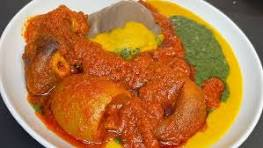

Yoruba Delicacy
This is the popular Amala and Ewedu with gbegiri which is from the yoruba ethnic group from the south-west region.
Bringing you to Nigeria Through Food.
This is the popular Amala and Ewedu with gbegiri which is from the yoruba ethnic group from the south-west region.
This is Ofe Nsala a popular delicacy from the igbo ethnic group from South-East Nigeria.
This is Tuwo Da Miyan Kuka which is a popular delicacy among the hausa of the Northern Nigeria.

This is the food that binds us all in Nigeria and a Nigerian party is never complete without it.